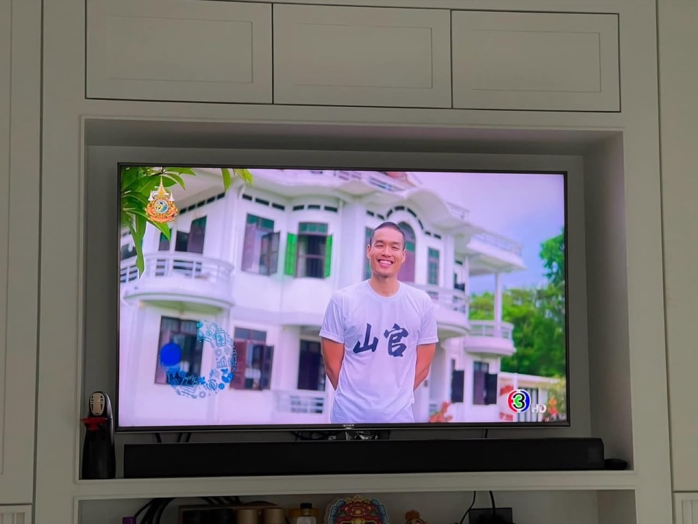

2024 · press · event
Channel 3's Ruang Lao Chao Ni features Anuphas Ford and Baan Ar-Jor

Original text in Thai
เรื่องเล่าเช้านี้ รายการเพื่อนคู่คิด ❤️
ฉาย 8:30 ช่อง 3 ส่วนตั่วโก๊ยังเฝ้าพระอินทร์อยู่ ทีวีก็ไม่ได้แลมาหลายปีแล้ว 😣 ขอบคุณพี่ๆ ดีลเลอร์ฟอร์ด ที่ส่งรูปสวยๆ มาให้นะครับ 🥰
ขอบคุณรายการเพื่อนคู่คิด ช่อง 3 ที่เลือกบ้านอาจ้อออกรายการทีวีนะครับ ❤️
ภาพคลิปรายการย้อนหลัง ได้ข้อมูลจะเอามาโพสอีกครั้งนะ 😇
#channel3thailand ☀️
#เพื่อนคู่คิด 🥰
#anuphasford 🛻
#บ้านอาจ้อ ❤️